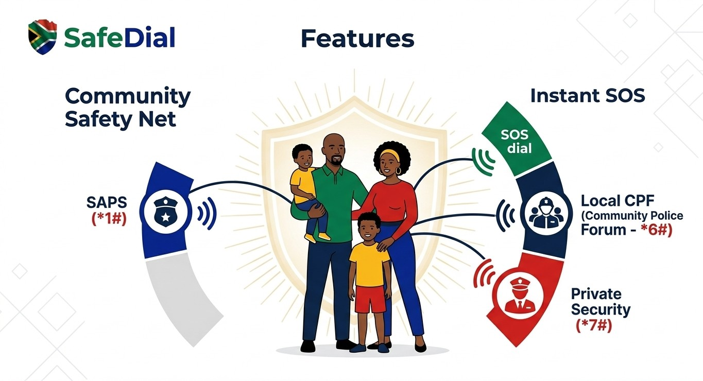

ABOUT SAFEDIAL
Safety in your pocket, help one dial away.
SafeDial is a South African emergency-access concept exploring how clear, memorable shortcuts could help people reach trusted contacts and services more easily.
This website is a concept demonstration. The displayed codes do not connect to emergency services. In a real emergency in South Africa, call 112 from a mobile, 10111 for police or 10177 for an ambulance.

Our mission
Make asking for help faster and simpler, with an interface people can understand under pressure.
Our vision
A South Africa where people know how to reach trusted help and do not hesitate because the next step is unclear.
Our values
- Speed: Keep important actions easy to find.
- Trust: Be clear about what the concept can and cannot do.
- Care: Design for people in stressful situations.